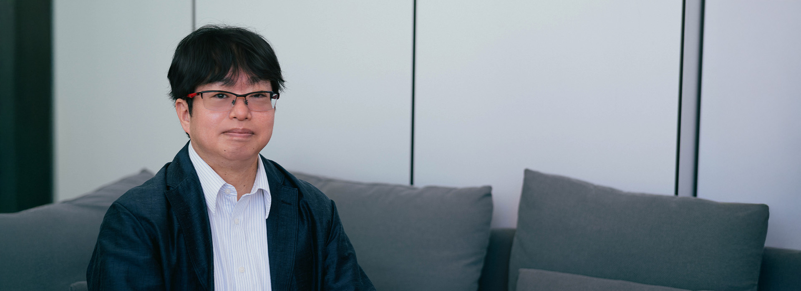
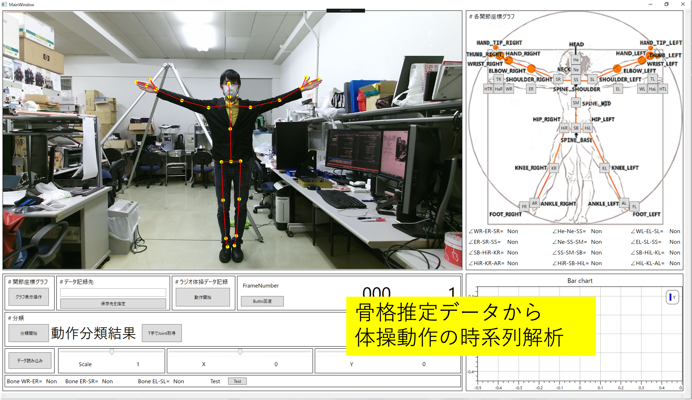
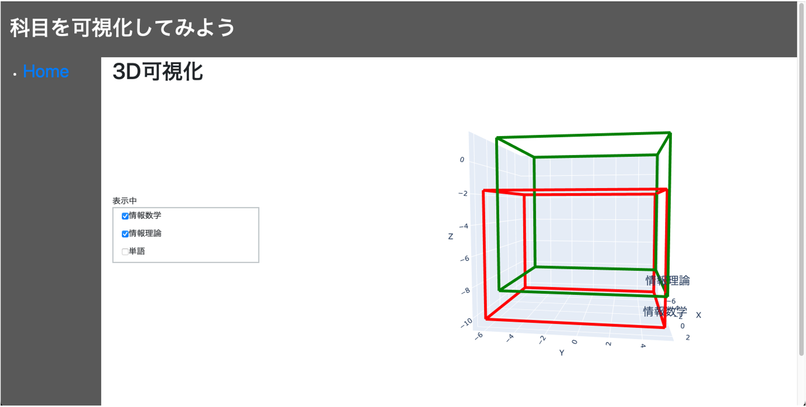
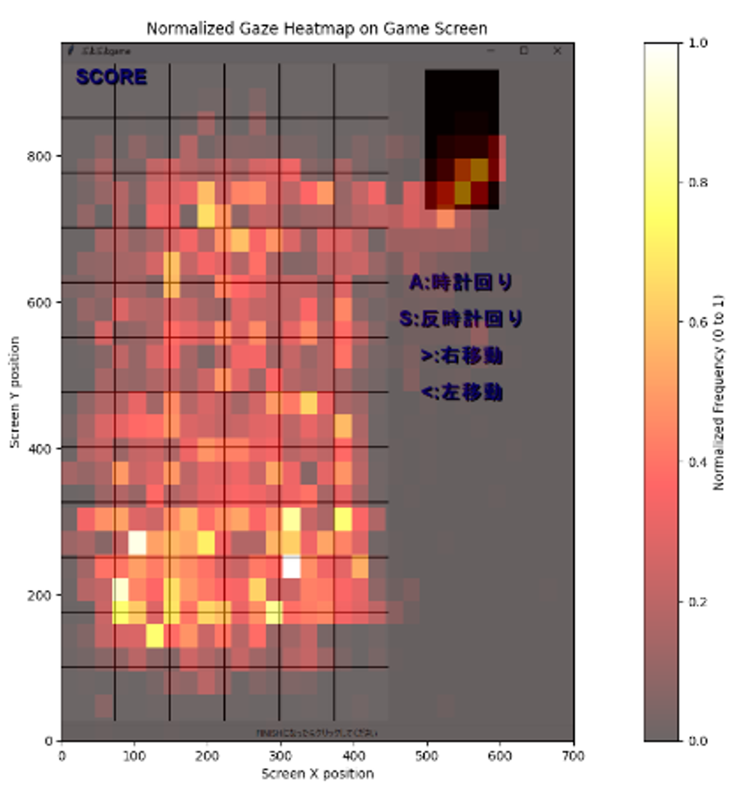

越智 洋司Youji Ochi
情報学部 准教授
#e-Learning
#人工知能
#マルチメディア技術
#コンピュータビジョン
1999年徳島大学大学院工学研究科博士後期課程卒。同年同大学工学部知能情報工学科助手。
2003年近畿大学理工学部電気電子工学科科講師、2019年准教授、2022年4月近畿大学情報学部准教授、現在に至る。
センサー技術やAIを駆使した『学びの行動』を読み解く教育システムの技術開発の研究に従事。
教育システム情報学会理事、関西支部支部長などを歴任。情報処理学会、人工知能学会などの会員。博士（工学）
主な研究
・対面授業とメディア授業における学習行動分析とラーニングアナリティクス
・モーションセンシング技術と動画像処理技術を利用した身体行動の計測と学習支援への応用
・大規模言語モデルを用いた教材・学習コンテンツ分析による学習支援


